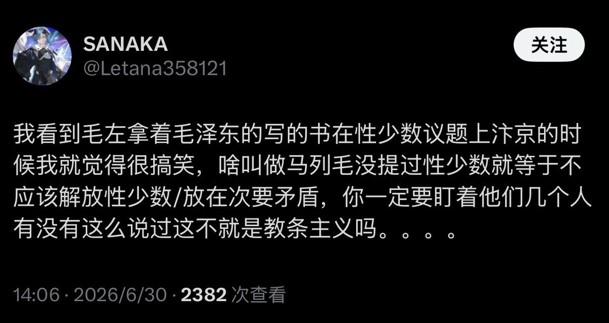
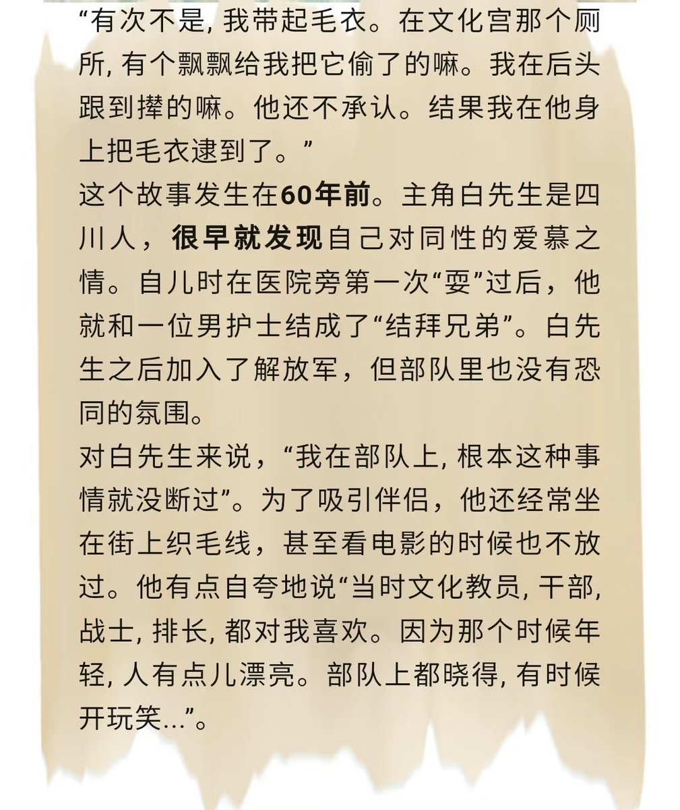
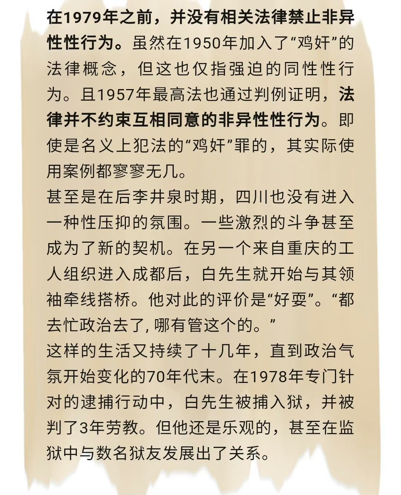

SANAKA
@Letana358121
RT @Static3i_: 自称支持毛主义的恐同者本质上接近于华国锋、叶剑英政权的拥趸。
根据白先生回忆：当地在毛泽东时代并没有恐同氛围（甚至在极端民族主义者李井泉当政时期），在那个时代同性伴侣一般以“结拜兄弟”自称，甚至自己参军后，在日后被文革派称之为“老保大本营”的解放…



惶犯无名
@Static3i_
自称支持毛主义的恐同者本质上接近于华国锋、叶剑英政权的拥趸。
根据白先生回忆：当地在毛泽东时代并没有恐同氛围（甚至在极端民族主义者李井泉当政时期），在那个时代同性伴侣一般以“结拜兄弟”自称，甚至自己参军后，在日后被文革派称之为“老保大本营”的解放军部队里，自己的感情生活也相当丰沛。 https://t.co/Tzp0VqkDp6